Ermitaj muzeyi: Jahon san’ati va tarixining beqiyos xazinasi

Ermitaj muzeyi (ruscha Государственный Эрмитаж, inglizcha The State Hermitage Museum) — dunyodagi eng yirik, eng qadimiy va eng nufuzli muzeylardan biridir. U Rossiya Federatsiyasining madaniy poytaxti hisoblangan Sankt-Peterburg shahrida joylashgan. Ermitaj muzeyi o‘zida millionlab san’at asarlari, tarixiy buyumlar va madaniy meros namunalarini jamlagan bo‘lib, insoniyat sivilizatsiyasining deyarli barcha bosqichlarini qamrab oladi. Bugungi kunda Ermitaj nafaqat Rossiyaning, balki butun dunyoning eng muhim madaniy markazlaridan biri hisoblanadi. Uning kolleksiyasi miqyosi, xilma-xilligi va badiiy qiymati jihatidan Luvr, Britaniya muzeyi va Vatikan muzeylari bilan bir qatorda turadi.
Ermitaj muzeyining tashkil topishi
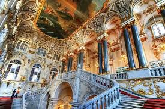Ermitaj muzeyining tarixi 1764-yilga borib taqaladi. Aynan shu yili Rossiya imperatori Yekaterina II (Yekaterina Buyuk) Berlin savdogari Iogann Gottskovskidan 225 ta rassomlik asarini sotib oladi. Ushbu to‘plam kelajakdagi Ermitaj kolleksiyasining asosini tashkil etadi. Yekaterina II san’atga nihoyatda qiziqqan, ma’rifatparvar hukmdor bo‘lib, u Yevropaning yetuk rassomlari va san’atshunoslari bilan yaqin aloqada bo‘lgan. U san’atni davlat qudrati va madaniy darajasining ramzi deb bilgan. Shu sababli qisqa vaqt ichida Yevropaning ko‘plab mamlakatlaridan nodir san’at asarlari sotib olinadi. Dastlab bu asarlar faqatgina imperator oilasi va saroy a’zolari uchun mo‘ljallangan bo‘lib, “ermitaj” so‘zi ham fransuzcha “yolg‘izlik, sokin joy” ma’nosini anglatadi. Faqat 1852-yilda Ermitaj rasmiy ravishda ommaviy muzey sifatida ochilgan.
Muzey binolari va me’morchiligi

Ermitaj muzeyi birgina bino emas, balki bir necha tarixiy inshootlardan iborat ulkan majmuadir. Muzey majmuasi Neva daryosi bo‘yida joylashgan bo‘lib, u shaharning eng go‘zal me’moriy ansambllaridan birini tashkil etadi. Asosiy binolar quyidagilardan iborat:
- Qishki saroy
- Katta Ermitaj
- Kichik Ermitaj
- Yangi Ermitaj
- Ermitaj teatri
Qishki saroy
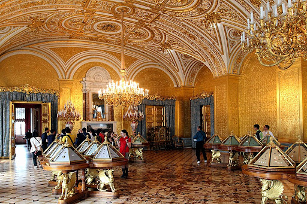Qishki saroy Ermitaj majmuasining eng mashhur va eng muhim binosidir. U XVIII asrda mashhur me’mor Bartolomeo Rastrelli tomonidan barokko uslubida qurilgan. Bu saroy uzoq yillar davomida Rossiya imperatorlarining asosiy qarorgohi bo‘lib xizmat qilgan. Saroyning ichki bezaklari — oltin naqshlar, marmar zinapoyalar, kristall lyustralar va devoriy rasmlar bilan bezatilgan. Bugungi kunda Qishki saroyning o‘zi ham alohida san’at asari sifatida baholanadi.
Ermitaj kolleksiyasi va bo‘limlari
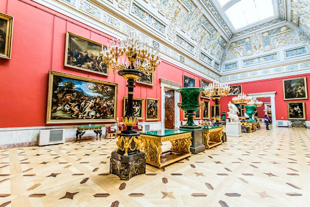Ermitaj muzeyida 3 milliondan ortiq eksponat mavjud bo‘lib, ularning taxminan 60 mingga yaqini doimiy ravishda namoyish etiladi. Kolleksiya vaqt jihatidan tosh davridan XXI asrgacha bo‘lgan davrni qamrab oladi.Muzey quyidagi asosiy bo‘limlardan iborat:
- Qadimgi dunyo san’ati
- Antik yunon va rim san’ati
- Sharq xalqlari san’ati
- Yevropa tasviriy san’ati
- Haykaltaroshlik
- Amaliy va bezak san’ati
- Numizmatika (tangalar)
- Arxeologik kolleksiyalar
Qadimgi dunyo va arxeologiya kolleksiyalari
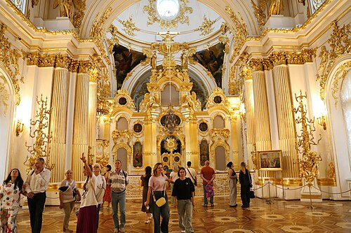Ermitajning qadimgi dunyo kolleksiyasi dunyodagi eng boy to‘plamlardan biridir. Bu yerda qadimgi Misr, Mesopotamiya, Skiflar, Yunon va Rim sivilizatsiyalariga oid noyob buyumlar saqlanadi. Qadimgi Misr bo‘limida mumiyalar, sarkofaglar, haykallar va diniy buyumlar mavjud. Ayniqsa, fir’avn Amenemxet III haykali alohida e’tiborga loyiq. Skif oltin buyumlari Ermitajning faxri hisoblanadi. Ular Markaziy Osiyo va Qora dengiz bo‘ylarida yashagan ko‘chmanchi xalqlarning yuksak san’at darajasini namoyon etadi.
Yevropa tasviriy san’ati
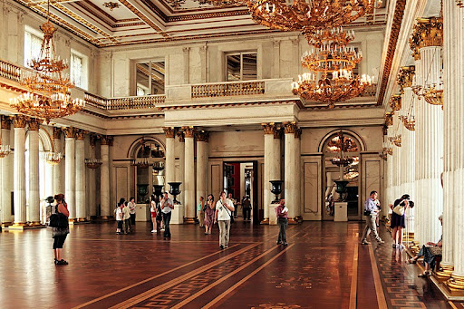Ermitaj muzeyining eng mashhur bo‘limlaridan biri — Yevropa rassomlik san’atidir. Bu bo‘limda XIV asrdan XIX asrgacha bo‘lgan davr rassomlari asarlari jamlangan.
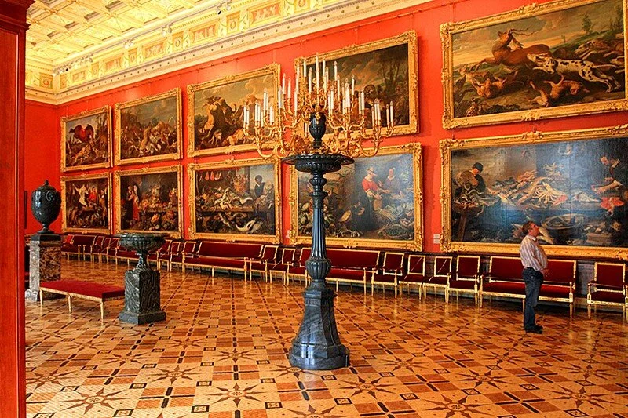Ermitajda Italiya Uyg‘onish davri san’ati keng namoyish etilgan. Bu yerda:
- Leonardo da Vinchi
- Rafael
- Mikelanjelo
- Titsian
kabi buyuk ustalarning asarlarini ko‘rish mumkin. Leonardo da Vinchining “Benois Madonna” va “Litta Madonna” asarlari alohida mashhur.
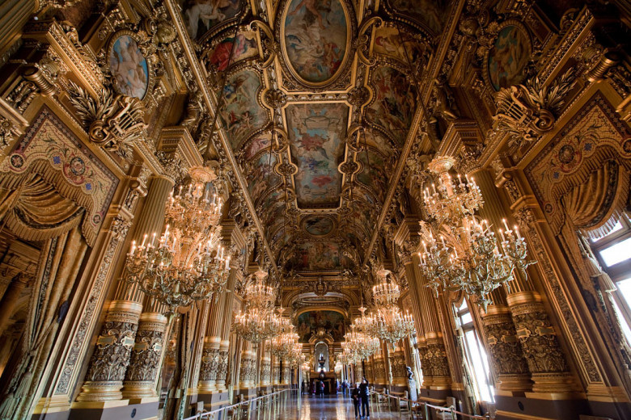Ermitaj Rembrandt asarlari soni bo‘yicha dunyodagi yetakchi muzeylardan biridir. Uning “Adashgan o‘g‘ilning qaytishi” kartinasi insoniy kechinmalarni chuqur ifodalashi bilan mashhur. Shuningdek, Rubens, Van Deyk va boshqa flamand rassomlari asarlari ham keng namoyish etilgan.
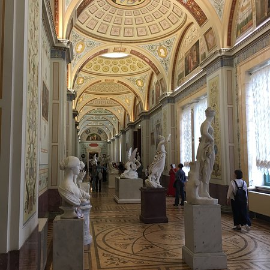Ermitajda fransuz san’ati alohida o‘rin tutadi. Klassitsizm, romantizm va realizm namunalari bilan bir qatorda impresionistlar — Monet, Renoir, Degas, Sezann, Van Gog va Pikasso asarlarini ham uchratish mumkin.
Haykaltaroshlik va amaliy san’at
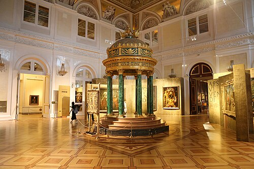Muzeyda haykaltaroshlik san’ati keng o‘rin egallagan. Antik davr marmar haykallari, Yevropa klassik haykaltaroshligi va zamonaviy asarlar mavjud. Amaliy san’at bo‘limida esa zargarlik buyumlari, qurol-aslahalar, mebellar, chinni va shisha buyumlar namoyish etiladi. Bu buyumlar o‘z davrining kundalik hayoti va estetik qarashlarini yoritib beradi.
Ermitaj teatri
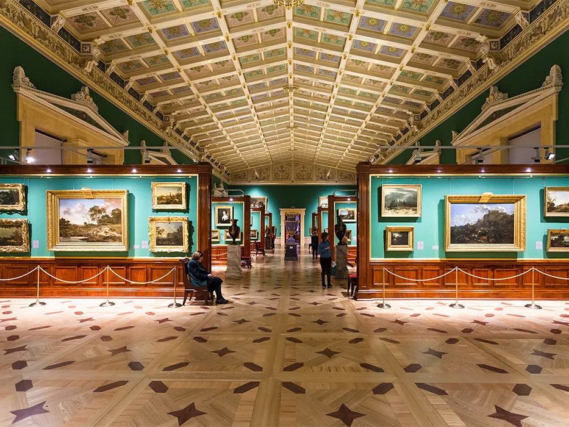Ermitaj teatri XVIII asrda qurilgan bo‘lib, imperator saroyining madaniy markazi hisoblangan. Bugungi kunda bu yerda kontsertlar, balet va musiqiy tadbirlar o‘tkaziladi. Teatr binosi ham muzey majmuasining muhim qismi hisoblanadi.
Ermitaj va zamonaviy faoliyat
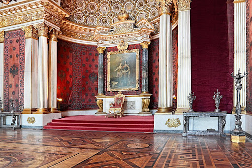Bugungi kunda Ermitaj muzeyi nafaqat ko‘rgazma markazi, balki yirik ilmiy-tadqiqot muassasasi hamdir. Muzey restavratsiya ishlari, arxeologik qazishmalar va ilmiy nashrlar bilan shug‘ullanadi. Shuningdek, Ermitaj dunyoning ko‘plab mamlakatlarida filiallar ochgan va xalqaro ko‘rgazmalarda faol ishtirok etadi.
Ermitaj muzeyi — bu shunchaki san’at asarlari to‘plami emas. U insoniyat tafakkuri, madaniyati va tarixining tirik xotirasidir. Har bir zal, har bir eksponat o‘z davrining ruhi va hikoyasini o‘zida mujassam etgan. Ermitajga tashrif buyurish — bu vaqt bo‘ylab sayohat qilish, turli sivilizatsiyalar bilan yuzma-yuz kelish va san’atning beqiyos kuchini his etish demakdir. Shu sababli Ermitaj muzeyi dunyo madaniyatining eng buyuk xazinalaridan biri sifatida e’tirof etiladi.